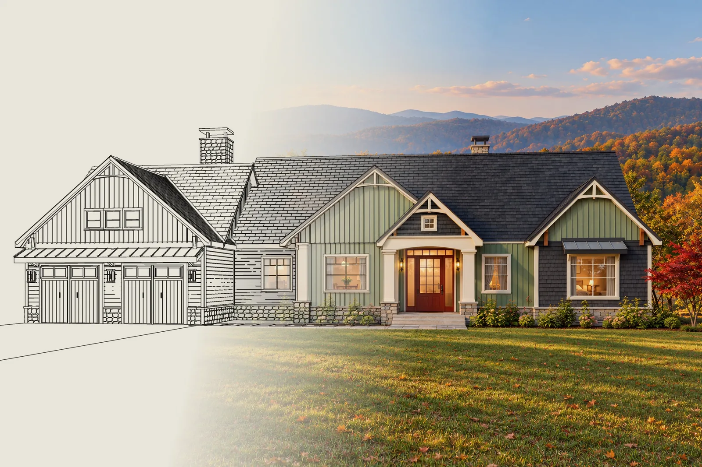
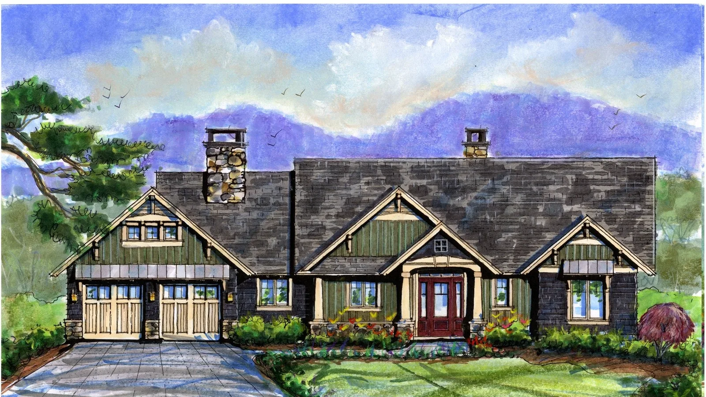
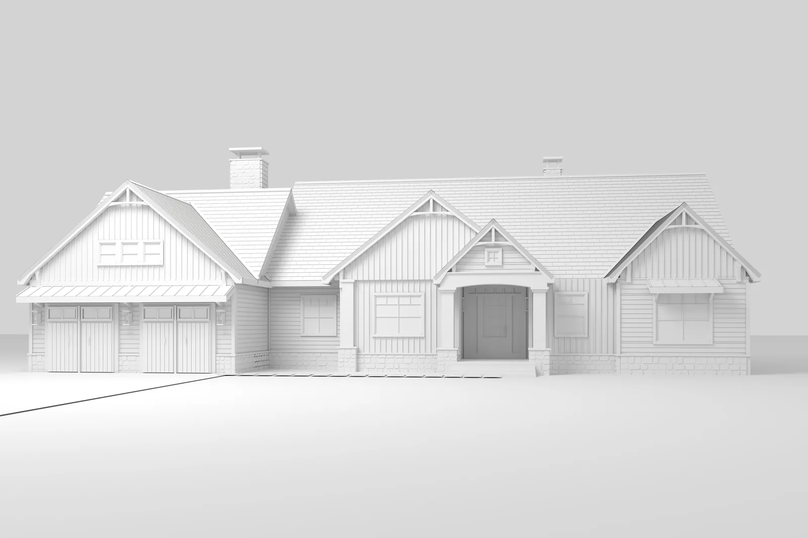
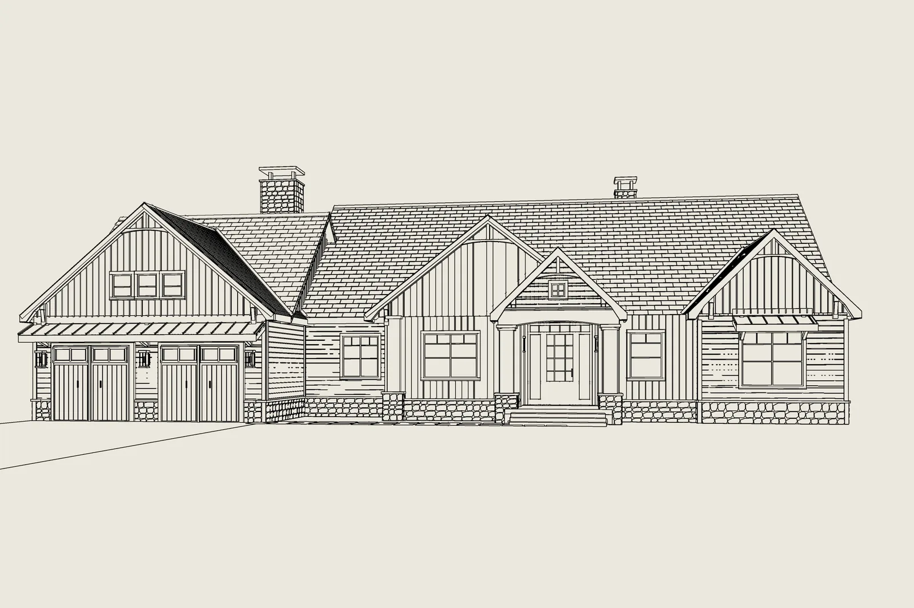

The Cedar, from watercolor to a real 3D model
We built your Grove Park Cove plan as a real 3D model from the 2019 watercolor and floor plan, then rendered it, for Dan.
Built by Tovizy as a full 3D model
- Prepared for
- Dan Grammatico
- Builder
- Dan Grammatico Signature Homes
- Plan
- The Cedar, Grove Park Cove
- Date
- October 2026
- 3D model and renderings
- Alex and Alexandra Lane, Tovizy

Dan,
You asked what realistic renderings of your plans would cost. Rather than describe them, we made them for The Cedar. We built the house as a real 3D model from your 2019 watercolor and the floor plan: four front gables, two fieldstone chimneys, the curved entry with its red door, sage board-and-batten over charcoal shingles.
Because it is a model and not a retouched drawing, the same house can be shown in any season, any light and from any side, and every view stays true to the plan. The other Grove Park Cove plans can be built the same way, so the whole series reads as one family. This is a concept draft. With your construction drawings we would match every detail.
Alex LaneTovizy, 3D visualization studio
Your watercolor, built as a real 3D model.
We started from the 2019 watercolor and the floor plan, built the house in 3D, drew it and then lit it. Drag across the picture below to see the drawing and the rendering line up.

Your watercolor
The 2019 elevation and the floor plan.

Our 3D model
Every gable, chimney, column and window.

The drawing
Lines taken straight from the model.

The light
Materials, planting and Blue Ridge light.
Three views of the home.
The front in late afternoon light, the covered entry and the front at dusk. Tap any picture to see it larger.
The same house through the year.
Every picture comes from the same 3D model, so the camera never moves: only the season and the light change.
Same home, same site, twelve moments.
The house and the lot stay exactly the same in every picture. Only the season, the weather and the story around the home change, so you can pick the ones that sell best.
Signature Dusk
Golden Hour
Peak Autumn
First Snow
Spring Bloom
Valley Fog
After the Rain
Starry Night
Cinematic
Editorial
Welcome Home
Native Garden
Six ways to put it on paper.
The same renderings, laid out for print, sales and social: the line drawing from the model, an architect's sheet, a magazine spread, a poster and a sales sheet ready to hand to a buyer.
Line to light. The drawing comes straight from our 3D model, so every line lands on the photograph.
Architect's sheet. Finishes keyed by number, datum lines and a title block, for architects and lenders.
Poster. The photograph sits in a window and the drawing runs on past its edges.
Sales sheet. Letter size, ready to print for a showing, with a QR code to this page.
Magazine spread. A full-page photograph, a headline and the facts of the home.
One year in one frame. Four seasons side by side, possible only because the camera never moves.
What we would do next.
All eight plans, one look
We model each Grove Park Cove plan once and render the series in the same light, so buyers compare plans, not pictures.
Rooms and a 360 tour
Interior views and a tour buyers can walk through on their phone before the house is built.
A page for every plan
A page like this one for each plan under your name and logo, or one site for the whole community.
Tell us what to change.
Reply to my email with notes on this draft, or send the drawings for The Cedar or another plan and we will start on the finished views.